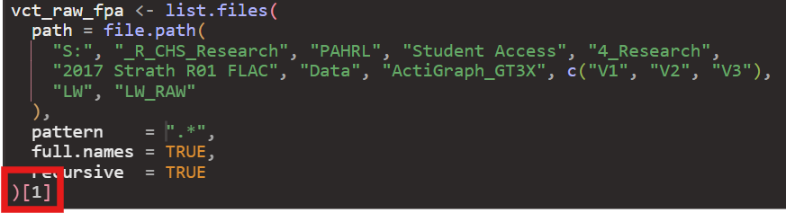
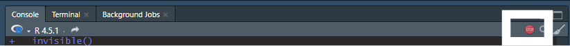

Last Update: 2026-09-23
YAML File (TODO)
Main Pipeline (TODO)
-
Open “_targets.R”
Navigate to the “Files” tab within Rstudio (located either in the bottom left or top left pane of the RStudio window IF you haven’t changed the pane layout in “Global Settings”). Click on “_targets.R”
Alternatively, open “_targets.R” with the system File Explorer. It should open the script within RStudio.
-
Within “INPUT” section, check the following:
-
RETICULATE_MINICONDA_PATH: The path to the conda installation specified within the configuration pipeline. -
study_timezone: Change fromSys.timezone()if data was collected in another timezone. Supply it as country/city (e.g.America/Los Angeles,Europe/London, etc.) -
sampling_frequency: The sampling frequency set for accelerometers during data collection. If using .bin/.cwa/.gt3x data then this doesn’t matter, but does for .csv data. -
n_workers: The default is 2 workers, meaning 2 processes of the pipeline will run in parallel of each other.-
n_workersshould always be at least 2! - If your operating system has more RAM and cores available, feel free to increase the number of workers, with the max being one less than the number of cores available of your system (
future::availableCores() - 1)
-
-
vct_raw_fpa: Change vct_raw_fpa such that it creates a character vector that points towards your raw files.We provide an example of how to do so using the
list.filesfunction, where thefile.pathfunction is used to list multiple directories at once.-
We suggest putting a “[1]” at the end of
list.filesto make sure pipeline works with one file. (image below)
-
Save the “_targets.R” script.
Run the code within “INPUT” section.
In Console, run “tar_make()”. For one file that is a whole day, it can take anywhere between 15-30 minutes on a potato computer. For one file that is a whole week, it may take up to 24 hours.
Once the pipeline has completed, a .html file should have been created under the “reports” folder called “summary_pipeline_main.html”. Open the file and double-check file went through entire pipeline successfully under the “By Major Steps” section.
-
If pipeline works successfully, close the “summary_pipeline_main.html” file and run pipeline on all files available by removing the the “[1]” at the end of the
list.filesfunction.Make sure to save the “_targets.R” script and rerun the code within “INPUT” section.
This WILL take multiple days if the repository is not being ran on a high performance cluster.
-
If the repository is being ran on a local computer, it is almost mandatory that no other work be done while the pipeline is running.
- If the pipeline is interrupted due to an unexpected restart, the progress should be saved for major steps within the pipeline. Re-follow steps 12-13 the pipeline will pick up from the last major step.
Open “summary_pipeline_main.html” once again and check to see what files have made it through. If all files have made it through, or at least the file’s you would’ve expected to be successfully processed, share the “3_MERGED” folder with WAVES data team, where “3_MERGED” is renamed with the study acronym.
From step 14, if there are no errors, you are ready to run the main pipeline(LINK ME).
Notes
Even if a pipeline finishes successfully, you may see in the console “There were XX warnings (use warnings() to see them)”. This is normal if working on an R version that is not 4.5.2., as the messages will be warnings that the packages are meant to work on the latest R version. As long as the R version being used is R 4.4 or beyond, everything should still work. We have not tested the WAVES repository on R versions below 4.4.
If working on a high performance cluster…TODO (work with Hayden, Ben on swarm and batch scripts)
-
If the pipeline appears “stuck” after 24hrs, as in it looks like there has been no change in the processing time or the console messages have been the same for quite awhile, its most likely that your computer does not have enough computing resources to do parallel processing. In that case:
- Stop the pipeline by clicking the “STOP” button that appears in the top right corner of the Console pane.

- Change the
n_workersobject to 2. Ifn_workersis already set to 2, then please run the WAVES repository on a computer system with better specifications, or reach out to the WAVES team for further discussion.